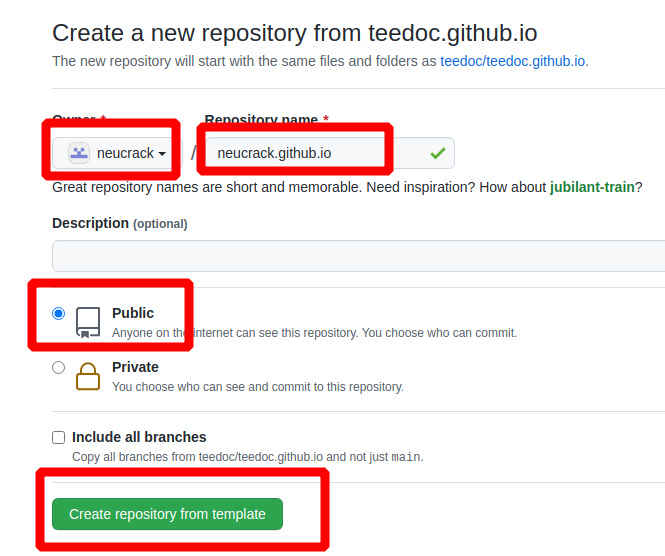
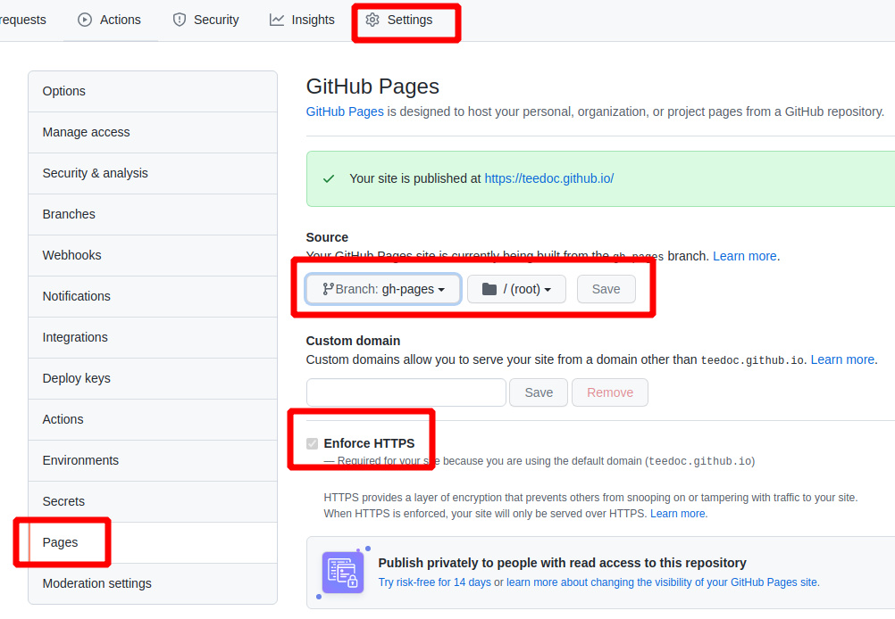

teedoc installation and use
Install python3
Need to install Python3 first (only support Python3)
For example, on Ubuntu:
sudo apt install python3 python3-pip git
Windows and macOS please go to Official Website Download
Install teedoc
Open the terminal and enter:
pip3 install teedoc
Later use the following command to update the software:
pip3 install teedoc --upgrade
If your network uses
pypi.organd the speed is very slow, you can choose other sources, such as Tsinghua tuna source:pip3 install teedoc -i https://pypi.tuna.tsinghua.edu.cn/simple
Now you can use the teedoc command in the terminal
If not, please check if the Python executable directory is not added to the environment variable PATH,
For example, it may be in ~/.local/bin
New Project
Create an empty directory to store the document project
mkdir my_site
cd my_site
teedoc init
or
teedoc -d my_site init
Select 1, which is the minimal template to generate, or you can directly generate it with teedoc -d my_site --template=minimal init
This will automatically generate some basic files in the my_site directory
In addition, in addition to using the init command to generate a minimal project, you can also get a source code of the official website document and modify it based on the content of this document
git clone https://github.com/teedoc/teedoc.github.io my_site
or
git clone https://gitee.com/teedoc/teedoc.gitee.io my_site
Install plugin
This will install the plugin according to the plugin settings of plugins in site_config.json
cd my_site
teedoc install
The plug-in is also released in the form of
pythonpackage, so this will download the corresponding plug-in frompypi.org. Similarly, other sources can also be used, such as Tsinghua tuna source:teedoc -i https://pypi. tuna.tsinghua.edu.cn/simple install
Build an HTML page and start an HTTP service
teedoc serve
This command will first build all HTML pages and copy resource files, and then start an HTTP service
If you only need to generate pages, use
teedoc build
After displaying Starting server at 0.0.0.0:2333 ...., it is fine
Open the browser to visit: http://127.0.0.1:2333
At the same time, you can see that there is an additional out directory under the directory, which is the generated static website content, directly copy it to the server and use nginx or apache for deployment.
Create a new repository based on the template repository on github and use the pages service to quickly create a website
Using the teedoc official website template and the github pages function, you can quickly create a website of your own. You don't need to build and maintain your own server, you don't need to deploy an HTTPS certificate yourself, and you don't need any key configuration. It can be completed in 3 minutes.
However, the github pages service also has disadvantages, that is, some domestic network lines in China may not be accessible.
Create a repository based on a template
- Visit https://github.com/teedoc/template or https://github.com/teedoc/teedoc.github.io, click
Use this template

- Set the name of the new repository to
username or organization name.github.io, select the public repository, and then confirm the submission

Then use
git clone your repository addressto clone to the local
Set up pages service
- Wait for the automatic build to generate a new branch
gh-pages, you can click on theActionscolumn to view the progress of the automatic build, if a green tick appears, it means it is OK, if a red cross appears, the build fails Yes, where is the problem, you can click in to view the log according to the screenshot method below (you must submit a screenshot of the log) and submit [issue](https://github.com/teedoc/teedoc.github.io/issues/ new) feedback

If there is an error, you can click to view the error log according to the following figure:


- Set the
pagesservice of the repository and select thegh-pagesbranch. If there is no such branch, the previous step has not been completed or an error occurred. You can view the issue submission [issue](https://github.com/ teedoc/teedoc.github.io/issues/new) feedback

- Then visit
username or organization name.github.io, you will find a webpage, the content is exactly the same asteedoc.github.io!